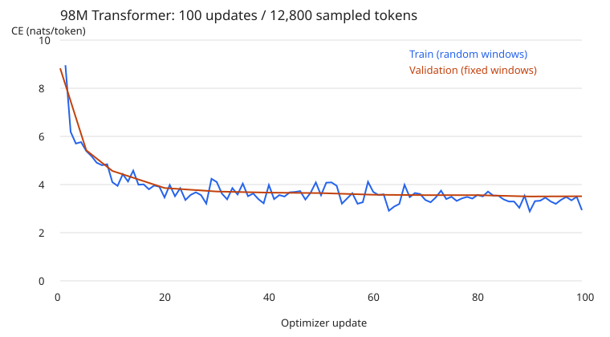

98M Transformer: training results
TinyStories, 100 optimizer updates, context length 128.
98,323,200 parameters | Apple M4 / MPS / FP32 | 100 updates | 12,800 sampled tokens
Fixed-window validation CE: 8.829942 → 3.513791 nats/token.
Stopped at update 5, then resumed to update 100.

Greedy completion:
Once upon a time the the the the the the the the the the the the the the the the the the the the the the the the the the the the the the the the
Checkpoint and optimizer inspection
Training backend: MPS. Checkpoint inspection: CPU. Inspection results
.venv/bin/python -m scripts.evidence > reports/checkpoint-verification.log
{
"verification": "Checkpoint inspection passed",
"checkpoint": "runs/week1-100m-mac/latest.pt",
"sha256": "17ff9f6a715f7b50da993747bf8e3a354076fb25ee3b47ff741f1fe1eee0da58",
"bytes": 1179993355,
"actual_weight_parameters": 98323200,
"completed_step": 100,
"adam_parameter_states": 86,
"adam_steps": [
100
],
"all_weights_finite": true,
"source_fingerprints_match": true,
"original_stdout_matches_metrics": true,
"recorded_device": "mps",
"verification_device": "cpu",
"report_type": "Checkpoint and optimizer inspection"
}
Reproduction commands
Working directory: stages/01-basics.
Existing nonempty run/data directories cannot be overwritten. Plain text commands
mkdir -p runs # Working directory: stages/01-basics
.venv/bin/python -m aml.tinystories --output data/week1-raw --train-rows 512 --val-rows 128 > runs/week1-data-download.log
.venv/bin/python -m aml.tokenizer --input data/week1-raw/train.txt --output data/week1-tokenizer.json --vocab-size 8192
.venv/bin/python -m aml.data --train data/week1-raw/train.txt --val data/week1-raw/val.txt --tokenizer data/week1-tokenizer.json --output data/week1-tokens > runs/week1-data-encode.log
.venv/bin/python -m aml.train --config configs/100m-mac.json --data data/week1-tokens --output runs/week1-100m-mac --device mps --stop-after 5 > runs/week1-training-first.log
.venv/bin/python -m aml.train --config configs/100m-mac.json --data data/week1-tokens --output runs/week1-100m-mac --device mps --resume > runs/week1-training-resume.log
.venv/bin/python -m aml.generate --checkpoint runs/week1-100m-mac/latest.pt --prompt 'Once upon a time' --temperature 0 --max-new-tokens 64 --device mps > runs/week1-generation.txt
# Checkpoint inspection and report rendering
.venv/bin/python -m scripts.evidence > reports/checkpoint-verification.log
Training log: updates 0, 5, 6 and 100
JSON log view. Complete logs:
updates 0–5 and updates 6–100.
{
"step": 0,
"val_loss": 8.829942464828491
}
{
"step": 5,
"train_loss": 5.393273830413818,
"lr": 0.00015,
"grad_norm": 9.992508888244629,
"tokens_seen": 640,
"step_seconds": 0.3257387080229819,
"tokens_per_second": 392.95299222151147,
"val_loss": 5.421929836273193
}
{
"step": 6,
"train_loss": 5.181138038635254,
"lr": 0.00017999999999999998,
"grad_norm": 12.458900451660156,
"tokens_seen": 768,
"step_seconds": 0.8719777090009302,
"tokens_per_second": 146.79274329920221
}
{
"step": 100,
"train_loss": 2.9360687732696533,
"lr": 2.9999999999999997e-05,
"grad_norm": 2.438824415206909,
"tokens_seen": 12800,
"step_seconds": 0.31031591701321304,
"tokens_per_second": 412.482869818598,
"val_loss": 3.513790726661682
}